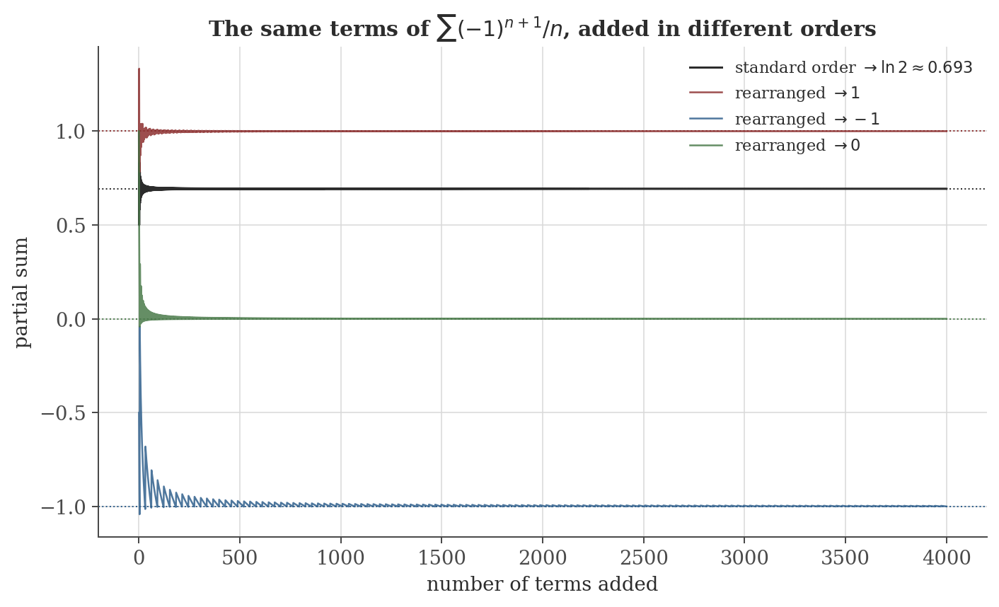
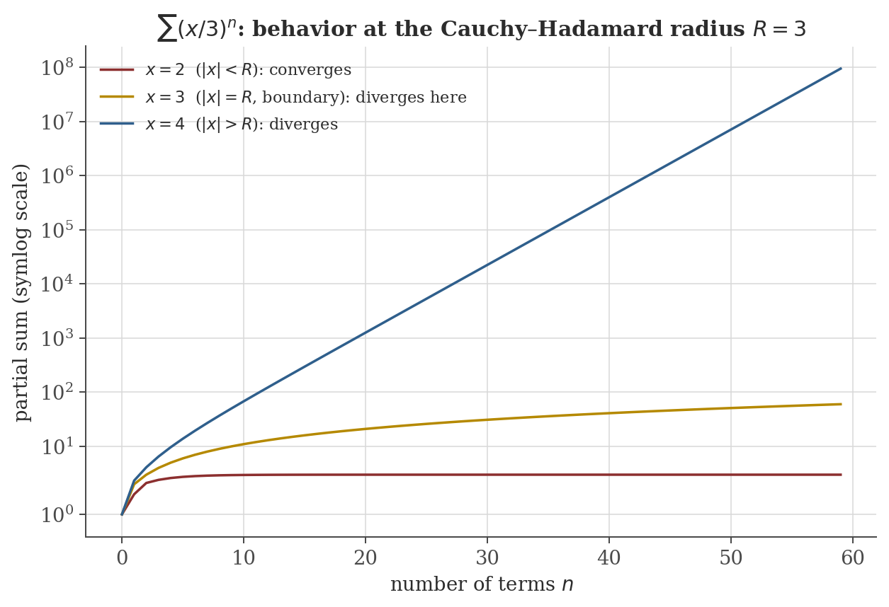

Sequences and Series
Disclaimer: These are my personal notes compiled for my own reference and learning. They may contain errors, incomplete information, or personal interpretations. While I strive for accuracy, these notes are not peer-reviewed and should not be considered authoritative sources. Please consult official textbooks, research papers, or other reliable sources for academic or professional purposes.
Contents
- Sequences and the definition of a limit
- Completeness, and the Monotone Convergence Theorem
- Bolzano–Weierstrass
- Cauchy sequences: convergence without knowing the limit
- Series as sequences of partial sums
- Convergence tests, derived rather than listed
- Absolute vs. conditional convergence, and rearrangement
- Power series and the radius of convergence
- Computation
- Common pitfalls
- Connections
- References
1. Sequences and the definition of a limit
A sequence $\{a_n\}_{n=1}^\infty$ converges to $L$, written $a_n\to L$, if
Read this as a two-player commitment: whatever tolerance $\epsilon$ is demanded, the sequence must eventually (past some index $N$, which may depend on $\epsilon$) stay within that tolerance forever after — not just visit it occasionally.
Limits are unique, and every convergent sequence is bounded.
2. Completeness, and the Monotone Convergence Theorem
The $\epsilon$-$N$ definition only tells you how to verify a candidate limit — it says nothing about when a limit exists. That existence question is where $\mathbb{R}$'s defining property enters:
Every nonempty subset of $\mathbb{R}$ that is bounded above has a least upper bound (supremum) in $\mathbb{R}$.
This is not a theorem — it is what distinguishes $\mathbb{R}$ from $\mathbb{Q}$, which fails it ($\{q\in\mathbb{Q}:q^2<2\}$ is bounded above in $\mathbb{Q}$ but has no rational supremum). Every existence result in this note ultimately traces back to this one axiom.
Every bounded, monotone (increasing or decreasing) sequence converges.
Note precisely what was and was not needed: monotonicity plus boundedness gives existence of a limit without ever exhibiting it — a genuinely different kind of conclusion from computing a limit directly, and one that would be false over $\mathbb{Q}$ (an increasing, bounded sequence of rationals can have an irrational supremum, hence no limit within $\mathbb{Q}$).
3. Bolzano–Weierstrass
Every bounded sequence in $\mathbb{R}$ has a convergent subsequence.
This proof is worth pausing on: it produces the monotone subsequence by a purely combinatorial argument about indices (no analysis yet), then hands off to Section 2's theorem for the actual convergence — a clean illustration of how a small number of foundational results (completeness $\Rightarrow$ MCT $\Rightarrow$ Bolzano–Weierstrass) generate the rest of the theory.
4. Cauchy sequences: convergence without knowing the limit
$\{a_n\}$ is Cauchy if $\forall\epsilon>0\ \exists N$ such that $m,n\geq N \Rightarrow |a_m-a_n|<\epsilon$.
A sequence in $\mathbb{R}$ converges if and only if it is Cauchy.
The genuine payoff: the Cauchy condition only references the sequence's own terms, so it can certify convergence before knowing the limit — indispensable whenever the limit is exactly the unknown object being constructed (as in the mean-square convergence arguments used to construct the causal MA($\infty$) representation of an AR(1) process in the time series note). And exactly like the Monotone Convergence Theorem, this theorem is specific to complete spaces: $\mathbb{Q}$ has Cauchy sequences (e.g. truncated decimal expansions of $\sqrt2$) that do not converge within $\mathbb{Q}$.
5. Series as sequences of partial sums
$\sum_{n=1}^\infty a_n$ converges to $S$ if the sequence of partial sums $S_N=\sum_{n=1}^N a_n$ converges to $S$ in the sense of Section 1.
This is not a new theory — every fact about sequences above applies verbatim to $\{S_N\}$. In particular the Cauchy criterion for $\{S_N\}$ reads $|S_m-S_n|=\left|\sum_{k=n+1}^m a_k\right|<\epsilon$ for $m>n\geq N$, the form used repeatedly below.
6. Convergence tests, derived rather than listed
If $\sum a_n$ converges then $a_n\to0$.
Immediate from the Cauchy criterion with $m=n+1$: $|a_{n+1}|<\epsilon$ eventually. The converse is false — the standard counterexample is below.
$\sum_{n=0}^\infty r^n = \dfrac{1}{1-r}$ for $|r|<1$; diverges for $|r|\geq1$.
$S_N=\sum_{n=0}^{N-1}r^n$ satisfies $S_N-rS_N = 1-r^N$ (telescoping), so $S_N=\dfrac{1-r^N}{1-r}$ for $r\neq1$; $r^N\to0$ iff $|r|<1$, giving the limit $\frac{1}{1-r}$. For $|r|\geq1$, $r^N$ does not $\to0$, so $S_N$ does not converge (and diverges to $+\infty$ for $r=1$ trivially).
If $f$ is positive, continuous, decreasing on $[1,\infty)$ and $a_n=f(n)$, then $\sum a_n$ converges iff $\int_1^\infty f(x)\,dx$ converges.
This is precisely what proves the $p$-series result $\sum 1/n^p$ converges iff $p>1$: $\int_1^\infty x^{-p}\,dx = \frac{1}{p-1}$ converges iff $p>1$ (direct computation). In particular $p=1$ (the harmonic series) diverges — while $a_n=1/n\to0$, confirming the divergence test's converse failure claimed above.
Comparison: if $0\leq a_n\leq b_n$ eventually and $\sum b_n$ converges, so does $\sum a_n$. Ratio test: if $a_n>0$ and $L=\lim a_{n+1}/a_n$ exists, $\sum a_n$ converges if $L<1$, diverges if $L>1$, and is inconclusive if $L=1$.
If $b_n\geq0$ is decreasing with $b_n\to0$, then $\sum(-1)^{n+1}b_n$ converges, and the error after $N$ terms is at most $b_{N+1}$.
7. Absolute vs. conditional convergence, and rearrangement
If $\sum|a_n|$ converges, then $\sum a_n$ converges (absolute convergence implies convergence).
The alternating harmonic series $\sum(-1)^{n+1}/n$ converges (Leibniz, Section 6) but $\sum1/n$ diverges (harmonic series) — conditional convergence: convergent, but not absolutely. This distinction is not a technicality:
If $\sum a_n$ converges conditionally, then for any target $T\in\mathbb{R}\cup\{\pm\infty\}$, some reordering of the same terms sums to $T$.
(See Rudin, 1976, Thm. 3.54, for the proof — a direct construction alternating between adding enough positive terms to exceed $T$ and enough negative terms to drop back below it, which terminates infinitely often only because both the positive and negative parts of a conditionally convergent series individually diverge.) Absolutely convergent series have no such pathology — every rearrangement of an absolutely convergent series converges to the same sum, so "the sum of the series," for an absolutely convergent series, is a property of the underlying set of terms, not of the order they happen to be listed in; for a conditionally convergent series it is not.

8. Power series and the radius of convergence
For $\sum_{n=0}^\infty c_n(x-a)^n$, let $\rho=\limsup_{n\to\infty}|c_n|^{1/n}$ and $R=1/\rho$ (with $R=\infty$ if $\rho=0$, $R=0$ if $\rho=\infty$). The series converges (absolutely) for $|x-a|<R$ and diverges for $|x-a|>R$; behavior exactly at $|x-a|=R$ is not determined by $R$ alone.
This follows from the root test (the same comparison-to-geometric-series idea as the ratio test in Section 6, applied to $|c_n(x-a)^n|^{1/n}=|c_n|^{1/n}|x-a|$): the terms' $n$-th roots tend to $\rho|x-a|$, giving convergence when $\rho|x-a|<1$, i.e. $|x-a|<1/\rho=R$. The boundary genuinely depends on the specific series, not just $R$: for $\sum x^n/n$ ($R=1$), $x=-1$ gives the convergent alternating harmonic series while $x=1$ gives the divergent harmonic series — two different behaviors at the same radius. Within the radius of convergence, a power series can be differentiated and integrated term by term, and the result is again a power series with the same radius $R$ (Rudin, 1976, Thm. 8.1); the resulting Taylor coefficients $c_n=f^{(n)}(a)/n!$ and the Lagrange remainder formula bounding the error of a degree-$N$ truncation are not re-derived here, but are exactly the tool used to justify the Maclaurin series listed in a calculus note's treatment of Taylor series.

9. Computation
The figures above are generated by sequences-series/generate_figures.py. The snippet below verifies the Cauchy–Hadamard radius numerically for the figure's series, and checks the ratio test's convergent case against a series with a known closed form.
import numpy as np
# Cauchy-Hadamard radius for c_n = (1/3)^n
n = np.arange(1, 200)
c_n = (1.0 / 3.0) ** n
root_n = c_n ** (1.0 / n)
print(f"|c_n|^(1/n) at n=199: {root_n[-1]:.6f} -> R = 1/that = {1/root_n[-1]:.6f} (exact R = 3)")
# Ratio test convergent case: sum n^2 / 2^n, closed form x(1+x)/(1-x)^3 at x=1/2
def partial_sum(N):
return sum(k**2 / 2**k for k in range(1, N + 1))
for N in (10, 20, 40):
print(f"N={N:3d}: partial sum = {partial_sum(N):.6f}")
x = 0.5
print("closed form x(1+x)/(1-x)^3 at x=1/2:", x * (1 + x) / (1 - x)**3)
Actual output:
|c_n|^(1/n) at n=199: 0.333333 -> R = 1/that = 3.000000 (exact R = 3)
N= 10: partial sum = 5.857422
N= 20: partial sum = 5.999537
N= 40: partial sum = 6.000000
closed form x(1+x)/(1-x)^3 at x=1/2: 6.0The estimated radius matches $R=3$ to six decimal places, and the ratio-test-justified series visibly converges toward its exact closed-form value $6$ as $N$ grows, consistent with Section 6's proof rather than merely "looking like it settles down."
10. Common pitfalls
The divergence test is a one-directional necessary condition, not sufficient. The harmonic series $\sum1/n$ is the standard counterexample: terms $\to0$, series diverges (Section 6).
It is genuinely uninformative — $\sum1/n$ and $\sum1/n^2$ both have ratio limit $1$ and opposite convergence behavior (Section 6). A different test (often the integral test or a more refined comparison) is required, not a judgment call about how close to $1$ the ratio is.
Not a pathological edge case reserved for pure mathematicians: any computation that reorders terms of a conditionally convergent sum (e.g. summing floating-point contributions in a different order, or reindexing a double sum without justifying absolute convergence first) can silently change the numerical answer, exactly as demonstrated in the figure above. Absolute convergence is the standing assumption that makes term reordering safe (Section 7); check it before reordering, not after noticing a discrepancy.
$|x-a|=R$ requires separate case-by-case analysis; different power series with the same $R$ can converge at both boundary points, one, or neither (Section 8's example already shows two different behaviors at the two endpoints of a single series).
11. Connections
- Continuity and limits. That note's sequential characterization of continuity, and the $\epsilon$-$\delta$ definition of a function limit, both directly reuse this note's $\epsilon$-$N$ definition of sequence convergence.
- Convergence theory. This note treats sequences and series of numbers; that note treats sequences and series of functions, where an entirely new distinction (pointwise vs. uniform convergence) appears that has no analogue here.
- Time series analysis. The AR(1) process's causal representation $X_t=\sum_{j\geq0}\phi^j\varepsilon_{t-j}$ is constructed there via exactly the Cauchy-criterion argument of Section 4, applied in the space of finite-variance random variables rather than $\mathbb{R}$; the geometric-series convergence condition $|\phi|<1$ from Section 6 is literally the same computation as that note's stationarity condition.
- Integration. The integral test (Section 6) is a direct comparison between a series and an improper integral, and Taylor's theorem (Section 8) underlies that note's treatment of Taylor series as polynomial approximations with quantified error.
12. References
- Rudin, W. (1976). Principles of Mathematical Analysis (3rd ed.). McGraw-Hill.
- Abbott, S. (2015). Understanding Analysis (2nd ed.). Springer.
- Apostol, T. M. (1974). Mathematical Analysis (2nd ed.). Addison-Wesley.